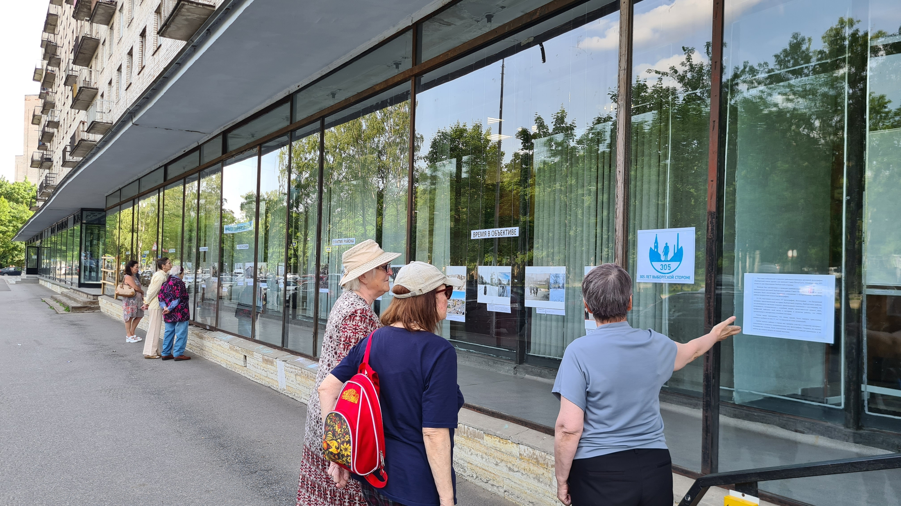

Своё современное название библиотека, обосновавшаяся на проспекте Тореза, получила в 2016 году – по инициативе читателей ей было присвоено имя Дмитрия Сергеевича Лихачева, выдающегося учёного‑филолога, публициста и общественного деятеля. Великий академик был жителем Выборгского района и почти 30 лет проживал в доме, находящемся в непосредственной близости от библиотеки.
Это событие ознаменовало новую страницу истории – уже несколько лет в стенах библиотеки им. Д. С. Лихачева проходит Всероссийский культуроведческий форум «Хранитель русской культуры», призванный популяризировать наследие Дмитрия Сергеевича.
Библиотека им. Д. С. Лихачева – культурный бренд Выборгского района, большой популярностью пользуется перформанс‑проект «Новые библиотекари» о «закулисье» библиотечного дела. За время существования проект вышел на международный уровень, став площадкой для обмена опытом между библиотечными специалистами.